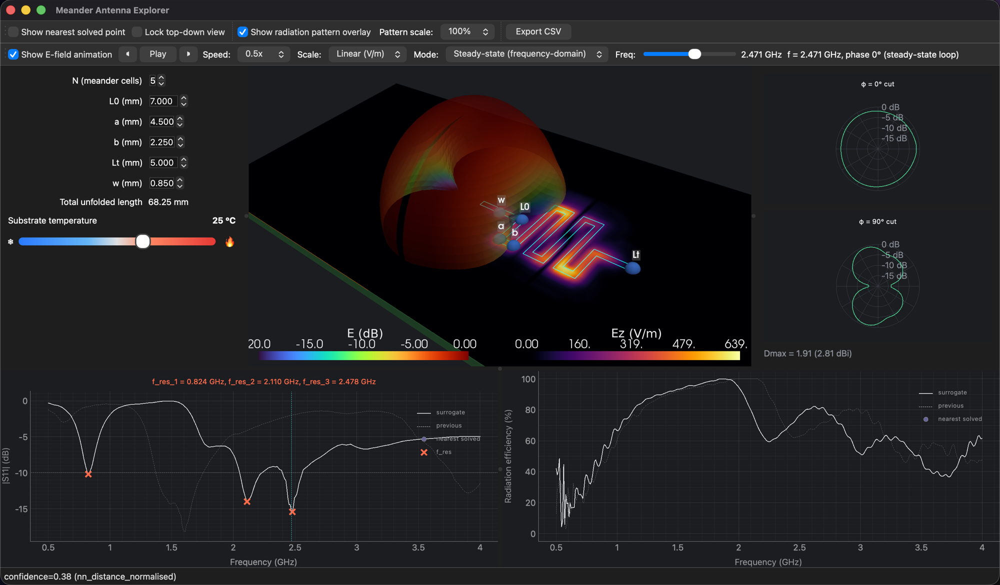
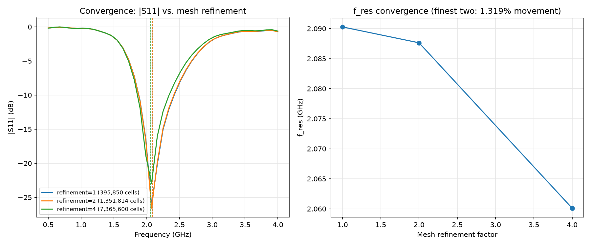

- Physics
- ElectromagneticsFull-wave openEMS FDTD solves of Maxwell's equations
- MeshConvergence checked from 0.4 to 7.4 million cells: under 1.3 % shift in resonance
- Data288 geometry solves, plus 30 for substrate temperature and Dk
- Role of ML
- An ML surrogate trained on openEMS solves, and validated against held-out ones, answers in 2.6 ms compared with about 90 s for a full-wave solve. The design space can then be explored continuously rather than one queued solve at a time.
Background
Meander-line antennas pack a resonant length into a small PCB footprint by folding the trace back on itself. That folding is also what makes them hard to design by hand: the number of meander cells (N), trace width and segment lengths all interact, and a small geometry change shifts resonant frequency and radiation efficiency substantially. Each openEMS FDTD solve took roughly 90 seconds in this setup, too slow for interactive exploration. I built this project to see whether a surrogate trained on a real design-of-experiments sweep could stand in for the solver while you design.
Approach
I wrote a parametric CSXCAD/openEMS geometry generator for meander antennas with N = 2–5 cells and ran Sobol design-of-experiments sweeps in a Dockerized openEMS 0.0.35 / CSXCAD build. That gave 72 real FDTD solves per N (60 train, 12 held out), 288 in total. Four surrogate families are fitted on that data:
- S11, resonant frequency and radiation efficiency across 0.5–4 GHz
- Radiation pattern, shown as φ = 0° and φ = 90° cuts with peak directivity
- Time-domain E-field, animated as a pulse travelling along the trace
- Frequency-domain near field at any frequency picked on a slider

Mesh convergence first
Before trusting any DoE data, I ran a mesh-convergence study on 395,850, 1,351,814 and 7,365,600-cell meshes of the same geometry. Resonant frequency moved less than 1.3% between the two finest meshes, and only then were the mesh settings locked for the full sweep.

Substrate effects, measured rather than assumed
Two materials sliders sit on top of the geometry surrogate, each backed by real solves: substrate temperature (6 solved temperatures) and FR4 dielectric constant, Dk 3.8–4.8 (24 solves across 6 contrasting geometries). The Dk sweep produced a genuine finding. Textbook microstrip theory predicts a log-log sensitivity of about −0.43 and says trace width is the lever. The solves showed −0.26 at N = 2, falling steadily to −0.16 at N = 5, with width barely mattering. These antennas are roughly half as Dk-sensitive as theory suggests, because more of their field fringes into air, so the model resolves sensitivity per N. The app also reports each Dk shift as a fraction of that design's own −10 dB bandwidth, which is the number that actually tells you whether a substrate lot will detune it.
Results
- A packaged, signed desktop app (V07) replaces a ~90-second FDTD solve with an instant prediction. The full update loop takes 2.6 ms on average (2.9 ms at p95), measured over 300 randomised parameter changes.
- Geometry can be dragged directly on the 3D model or set numerically, and the current design and predicted curves export to CSV.
- The app reports its accuracy openly. On held-out N = 3 data it shows 4.6% mean / 14.6% p95 error on resonant frequency, 5.1 dB on |S11| and 7.1 points on efficiency, short of the 2% / 2 dB / 3-point targets. The DoE reached 72 points per N against a 256-point plan, so the fix is more training data, not model tuning, and the app says so.
Live demo
Screen recording of the app: adjusting geometry and watching S11, efficiency and the 3D model update in real time.